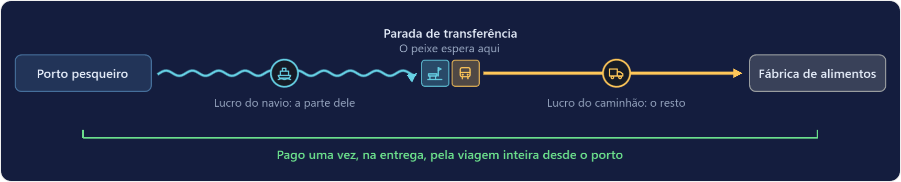

Paradas e ordens
Para onde um veículo vai e o que faz lá.
Um veículo visita suas paradas em ordem e depois recomeça pela primeira.
- Em cada parada ele descarrega só o que aquela estação aceita. É aí que você recebe. Depois carrega o que estiver esperando.
- A carga que não é aceita fica a bordo, a menos que a parada seja de transferência (abaixo).
- Os trens dão a volta no fim da linha, então uma linha simples de ponta a ponta funciona.
- Adicione, remova e reordene paradas a qualquer momento na janela do veículo.
Escolher no mapa
- Clique em Escolher no mapa na janela de compra ou na janela de um veículo. A janela sai da frente.
- Clique nas suas estações, uma depois da outra. Cada clique adiciona uma parada, e a barra no alto vai listando todas.
- Desfazer tira a última parada.
- A seleção continua ativa até você clicar em Pronto ou pressionar Esc.
- Se uma estação não serve, a nota ao lado do mouse diz por quê.
Carga completa
Cada parada tem uma caixa Carga completa na janela do veículo: o veículo espera ali até encher. Use-a onde a carga sai, nunca onde ela é entregue.
Transferências
A carga pode trocar de veículo no caminho. Digamos que o peixe de um porto pesqueiro deva atravessar o mar de navio e depois seguir para o interior de caminhão até uma fábrica de alimentos:


- Construa uma doca na outra margem e uma parada bem ao lado, para que elas se unam numa só estação.
- Dê ao navio a doca do porto e essa estação, e marque Transferência na segunda parada (na janela de compra ou na janela do navio).
- Compre caminhões que andem dessa estação até a fábrica de alimentos.
- Numa parada de transferência, o veículo deixa a carga que a parada não aceita. Ela espera ali pelos seus outros veículos, que a levam antes de qualquer outra carga do mesmo tipo.
- Seus veículos também podem recolher carga em transferência de outra estação sua a até 3 quadrados de distância, medidos entre os quadrados mais próximos das duas estações. Procure Estações próximas para transferência na janela da estação. Deixe Transferência desativada na parada de coleta.
- Você recebe uma só vez, na entrega, pela viagem inteira desde onde ela foi carregada pela primeira vez.
- O lucro do primeiro veículo mostra a parte dele nessa tarifa, e o do último, o resto, para você ver quanto cada trecho rende.
- Um veículo nunca recolhe a carga que ele mesmo deixou na sua parada de transferência.
Só descarregar, não carregar, passar pelo depósito
O pequeno menu ao lado da caixa Transferência de uma parada tem mais três ordens. O botão mostra um ícone para cada uma que esteja ativa.
- Só descarregar: sai tudo. O que a estação aceita é entregue e pago; o resto fica lá para transferência. Nada é carregado.
- Não carregar: entrega o que a estação aceita, mas não carrega nada, assim o veículo guarda o espaço para uma parada seguinte.
- Passar pelo depósito: depois da parada o veículo passa pelo seu depósito mais próximo, esteja onde estiver, para uma revisão e qualquer troca de carga encomendada. Navios e aviões são cuidados nas suas estações.
- Uma parada não pode ser Só descarregar e Carga completa ao mesmo tempo, e Não carregar fica desligado enquanto qualquer um dos dois estiver marcado. Numa linha, essas ordens valem para todos os veículos dela.
Veículos perdidos
Quando um veículo se perde, uma mensagem avisa: clique nela para abrir o veículo. Quando vários se perdem ao mesmo tempo, a mensagem abre Problemas.
Um veículo que diz Perdido não encontra caminho até a próxima parada. Ele continua tentando; conserte a estrada ou os trilhos e ele segue viagem.
Uma parada cuja estação foi demolida aparece marcada como Demolido na janela do veículo. Adicione outra parada e ela sairá da rota.
Trocar a carga
- Clique em Trocar carga ao lado da barra de carga na janela do veículo, escolha o que ele deve levar e confirme.
- O veículo entrega o que leva na próxima parada, não carrega nada e vai a um depósito, onde a troca é feita. Navios e aviões são trocados naquela mesma parada.
- Até a troca ser feita, você pode cancelá-la e receber o dinheiro de volta.
- O veículo mantém as ordens, a idade e o histórico.
- Um trem também pode ganhar, perder ou misturar vagões. Converter um vagão custa $ 975 e um novo, $ 6.500; um vagão retirado devolve o que ainda vale.
- Qualquer outro veículo paga 15% do seu preço pela troca.
- A carga a bordo que não cabe mais se perde.
Na janela do veículo
| Botão | O que faz |
|---|---|
| Seguir | A câmera acompanha o veículo. |
| Parar | Segura o veículo na próxima estação; clique de novo para fazê-lo partir. |
| Só trens: faz o trem dar meia-volta onde está e o manda para uma das suas paradas que alcance por esse lado, ou senão para um depósito. | |
| Clonar | Compra outro igual com as mesmas ordens. |
| Renovar | Troca por um novinho do mesmo modelo. |
| Vender | Clique duas vezes. Você recebe de volta o valor atual dele. |